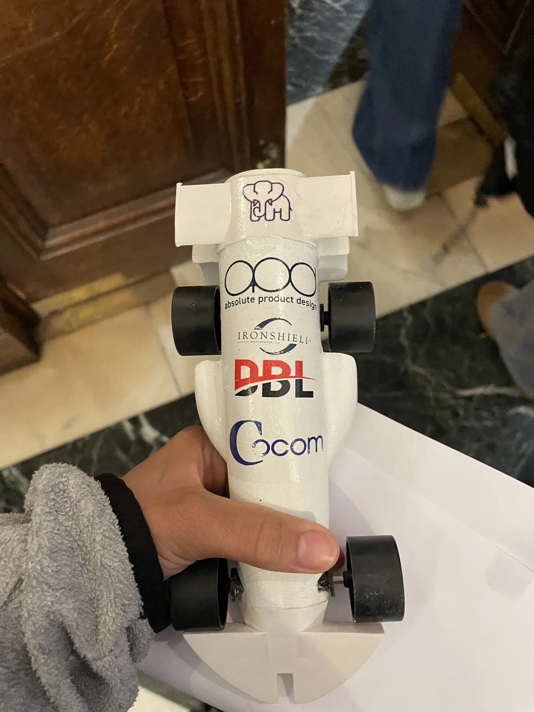
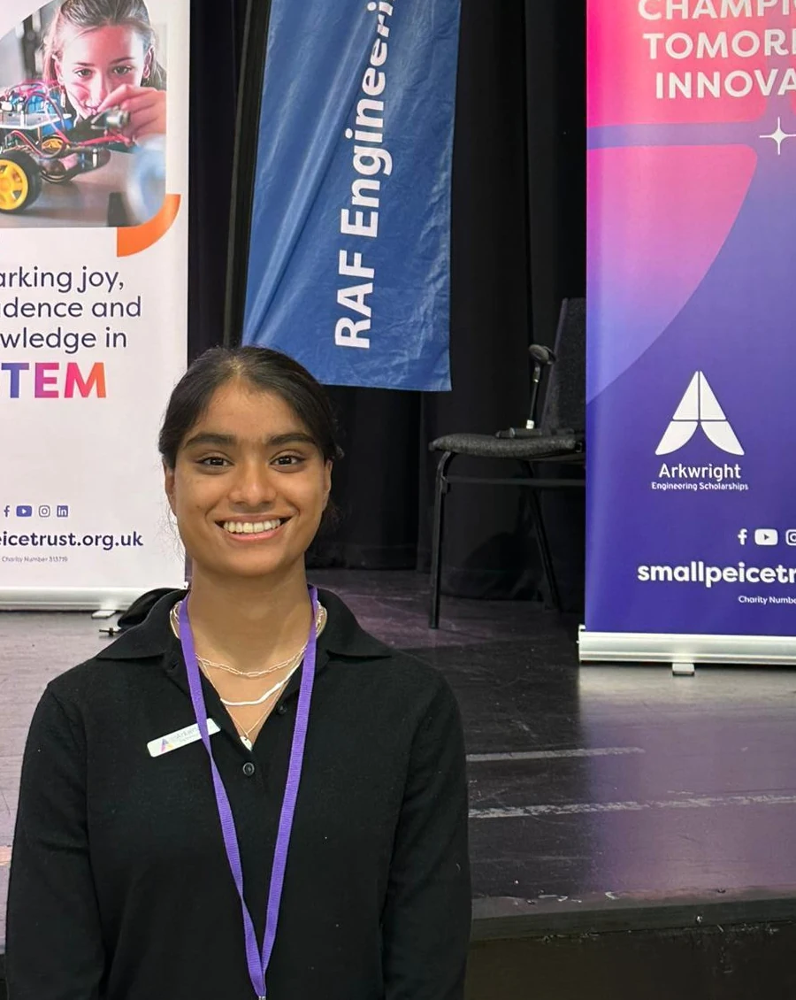

Designing.
Building.
Iterating.
Exploring the intersection of mechanical design, robotics, electronics and thoughtful problem-solving through hands-on projects.


Design. Build. Test.RACING · ROBOTICS · SAFETY
12Projects across engineering,
software & research
software & research
04Academic years of documented
project work
project work
01Design philosophy:
learn by making
learn by making
ABOUT / THE APPROACH
Making things is my thing.
Hi, I'm Arina! I'm an aspiring mechanical engineer, cartoonist, and enthusiastic maker who absolutely loves bringing ideas to life. Whether it's a walking robot, a smart motorcycle crash-detection helmet, or even doodles of Daffy Duck, making things is at the core of who I am. The projects and competitions below are from my time in high school, focusing on how each idea evolved: the initial problem statement, technical decisions, problems encountered and lessons learned.

PROJECT ARCHIVE / 2024—2026
Selected projects.
Each entry documents a different design, research or engineering challenge.